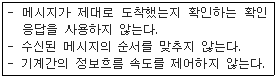
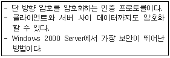
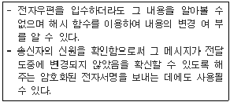

네트워크관리사-1급 (2004-10-24 기출문제)
1과목: TCP/IP
1. 인터넷의 도메인(Domain) 이름에 대한 설명 중 잘못된 것은?
- 인터넷에서 사용되는 도메인 이름의 등록과 관리는 모두 미국의 INTERNIC에서 한다.
- KRNIC에서 부여하는 기관명의 최대 길이는 63자이다.
- 국가도메인(nTLD)이란 세계 각 국가들을 두 자리 영문자로 표현한 190여개의 도메인을 말한다.
- 기관의 이름, 기관의 성격, 국가표시 등으로 구성된다.
(정답률: 알수없음)

2. B Class 128.10.0.0 주소를 갖는 곳에서 Host 수 150개, 물리적인 망 100개를 구성할 경우 잘못된 것은?
- 물리적인 망구조를 고려할 필요 없이 host ID 부분에 1~150까지 주소를 할당한다.
- 물리적인 망 100개가 구성되므로 라우터도 100대가 필요하고 이에 대해 개별적인 host주소를 지정하여 관리한다.
- 150개 호스트 사이에 있는 모든 라우터는 각 호스트가 존재하는 위치를 알아야 한다.
- 새로운 호스트가 추가되면 라우터의 라우팅 정보를 갱신해야 한다.
(정답률: 알수없음)
3. 192.168.55.0이란 네트워크 ID를 가지고 있고, 각 서브넷이 25개의 호스트 ID가 필요하며 가장 많은 서브네트를 가져야할 때 가장 적절한 서브넷 마스크는?
- 255.255.255.192
- 255.255.255.224
- 255.255.255.240
- 255.255.255.248
(정답률: 알수없음)
4. IPv6에서 분류되는 주소와 거리가 먼 것은?
- Anycast
- Unicast
- Multicast
- Intercast
(정답률: 70%)
5. 다음 중 IPv6이 출현한 직접적인 배경이 아닌 것은?
- IP 주소 공간의 부족 예측
- 라우터의 부하 증가
- IPv4에서의 라우팅 정보의 넘침(Overflow)
- 목적지의 주소를 찾지 못하는 현상의 발생
(정답률: 60%)
6. FTP 프로토콜에서 보안에 사용되는 명령어에 대한 설명 중 잘못된 것은?
- AUTH : 데이터 채널 상에서 클라이언트와 서버가 어떤 수준의 보안을 구현할지를 나타낸다.
- CCC : 보안 실행의 사용을 종료할 때 쓰인다.
- ADAT : 사용하기로 결정된 보안기법에 선택적인 기능을 구현하기 위해 추가적인 정보를 보낸다.
- PBSZ : 파일이 전송될 동안 전송될 기호화된 데이터 블록의 최대 크기이다.
(정답률: 알수없음)
7. TCP 세션의 성립에 대한 설명으로 잘못된 것은?
- 세션 성립은 TCP Three-Way 응답 확인 방식이라 한다.
- 실제 순서번호는 송신 호스트에서 임의로 선택된다.
- 세션 성립을 원하는 컴퓨터가 ACK 플래그를 0으로 설정하는 TCP 패킷을 보낸다.
- 송신 호스트는 데이터가 성공적으로 수신된 것을 확인하기까지는 복사본을 유지한다.
(정답률: 알수없음)
8. Internet Protocol에 대한 설명으로 잘못된 것은?
- TCP에 의해 패킷으로 변환된 데이터를 Datalink Layer에 전달하여 다른 호스트로 전송하게 한다.
- 필요시 패킷을 절단하여 전송하기도 한다.
- 비 연결 프로토콜이다.
- OSI 7 Layer의 Datalink Layer에 대응한다.
(정답률: 알수없음)
9. TCP 환경에서는 여러 가지 프로토콜을 지원한다. 각 프로토콜에 대해 기본적으로 지정되어 사용되고 있는 포트번호가 아닌 것은?
- NNTP : 90
- TFTP : 69
- SMTP : 25
- FTP : 21
(정답률: 알수없음)
10. 네트워크 구획에서 두 호스트가 성공적으로 통신하기 위해 각 하드웨어의 물리적인 주소문제를 해결해 주는 프로토콜은?
- IP
- ARP
- ICMP
- IGMP
(정답률: 알수없음)
11. 다음 내용과 같은 특징을 가진 프로토콜은?

- TCP
- RARP
- ARP
- UDP
(정답률: 70%)
12. 망 내 교환 장비들이 오류 상황에 대한 보고를 할 수 있게 하고, 예상하지 못한 상황이 발생한 경우 이를 알릴 수 있도록 지원하는 프로토콜은?
- ARP
- RARP
- ICMP
- RIP
(정답률: 알수없음)
13. IGMP 패킷의 필드에 대한 설명 중 잘못된 것은?
- 체크섬(Checksum)은 데이터가 전송도중에 문제가 생기지 않았음을 보장하는 역할을 한다.
- Message Type은 질의 보고서 등의 메시지 종류를 나타내는데 사용된다.
- Version 필드에는 값을 0으로 설정된다.
- 그룹동보통신에 포함된 그룹에서 질의를 요청할 때 이 필드는 모두 0의 값으로 설정된다.
(정답률: 알수없음)
14. Telnet 이용 시, 원격시스템(Remote System)과 Local 시스템 사이에서 Zmodem으로 파일을 전송할 수 있도록 한 프로그램은?
- rlogin
- remsh
- ztelnet
- slogin
(정답률: 알수없음)
15. 다음 설명 중 맞는 것은?
- FTP : 인터넷을 통해 파일을 송/수신하기 위한 프로토콜
- SMTP : FTP에 있는 파일들을 검색할 수 있는 서비스
- HTTP : 원격접속을 하기 위한 프로토콜
- Telnet : 하이퍼텍스트 문서를 전송하기 위한 프로토콜
(정답률: 65%)
16. TFTP에 대한 설명 중 잘못된 것은?
- 시작지 호스트는 잘 받았다는 통지 메시지가 올 때까지 버퍼에 저장한다.
- 시작지 호스트는 재전송 시간이 경과되었거나, 데이터 패킷이 재전송 되기 전까지는 통지메시지를 받지 않는다.
- 모든 데이터는 512바이트로 된 고정된 길이의 패킷으로 되어 있다.
- 보호등급을 추가하여 데이터 스트림의 위아래로 TCP 체크섬이 있게 한다.
(정답률: 알수없음)
2과목: 네트워크 일반
17. NFS는 사용자가 원격파일을 액세스하는데 필요한 두 가지 프로토콜을 구현한다. 그 중 마운트 프로토콜의 특성으로 맞는 것은?
- NFS 서버를 클라이언트 호스트의 로컬 디렉터리 구조에 연결하는데 필요한 기능을 제공한다.
- 클라이언트가 NFS 서버상의 파일을 액세스하는데 필요한 네트워크 통신 메카니즘을 구성한다.
- 로컬사용자가 원격파일에 액세스하는데 필요한 실제적인 네트워크 전송을 다룬다.
- UDP 전달계층 프로토콜 위에 구축된다.
(정답률: 알수없음)
18. 다음 중 최초의 통신 프로토콜이라고 볼 수 있는 것은?
- TCP/IP
- IPX
- Morse
- ALOHA
(정답률: 54%)
19. 부호분할 다중화에 관한 설명 중 잘못된 것은?
- 스펙트럼 확산 방식을 사용한다.
- 동일한 주파수 대역을 사용할 수 있다.
- 주파수 이용 효율이 높다.
- 서로 같은 코드를 사용하여 통신하기 때문에 통신보안이 우수하다.
(정답률: 알수없음)
20. 다음 중 데이터링크 계층의 X.25 네트워크에 사용되는 프로토콜은?
- LAPB
- LAPD
- PPP
- SLIP
(정답률: 알수없음)
21. ATM 셀 헤드 구조에 대한 설명으로 올바른 것은?
- 셀 헤드 구조는 UNI셀과 NNI셀이 서로 같은 구조를 가진다.
- VPI는 가상채널구분자이고 VCI는 가상경로구분자이다.
- 셀 헤드의 크기는 5bit이다.
- HEC는 에러제어검사용 정보이다.
(정답률: 알수없음)
22. 분산처리, 클라이언트 서버 환경, 멀티미디어, 그래픽 환경이 확대됨에 따라 기존 Ethernet에서 연장하여, 연결 할 수 있는 최대거리를 단축하여 기존 Ethernet의 10배 대역폭을 제공하는 방식은?
- Fast Ethernet
- ATM(Asynchronous Transfer Mode)
- Gigabit Ethernet
- FDDI(Fiber Distributed Data Interface)
(정답률: 50%)
23. ADSL에 대한 설명 중 잘못된 것은?
- 상향속도는 16~640Kbps정도이다.
- 하향속도는 1.5~8Mbps정도이다.
- 6Km거리에서 6~8Mbps 하향속도를 지원한다.
- 전화회선을 통해 높은 대역폭으로 디지털 정보를 전송하기 위한 기술이다.
(정답률: 알수없음)
24. Gigabit Ethernet에 대한 설명에 해당하는 것은?
- MAC계층에서는 토큰 링 프로토콜을 사용한다.
- Gigabit Ethernet에서는 Fast Ethernet의 10배 대역폭을 지원하기 위해 동일한 슬롯크기를 유지 하면서 케이블 거리가 10m 정도로 짧아진다.
- Gigabit Ethernet에서는 슬롯의 크기를 512바이트로 확장하여 전송 속도를 증가시킨다.
- 현재의 Ethernet과의 호환이 어렵고, 연결 설정형 방식이다.
(정답률: 알수없음)
25. ATM과 STM을 설명한 내용 중 잘못된 것은?
- STM은 디지털 패킷교환 방식에 이용되고 있는 것으로, 일정한 시간으로 정보를 보내는 방식이다.
- ATM은 일정한 간격으로 셀을 보낸다.
- ATM은 비동기식 전송이고, STM은 동기식 전송이다.
- ATM은 빈 시간에 빈 셀이라는 빈 정보를 보내고, 빈 셀 헤더의 부분에 그 뜻을 표시한다.
(정답률: 알수없음)
26. 광케이블의 다중 모드 광섬유에 대한 특징이 아닌 것은?
- Core내를 전파하는 모드가 여러 개 있다.
- 모드 간 간섭이 일어난다.
- 모드 간에 간섭이 없다.
- 고속, 대용량 전송이 가능하다.
(정답률: 알수없음)
27. 다음 설명 중 잘못된 것은?
- Peer to Peer 모델은 네트워크에 참여하는 각각의 컴퓨터들이 자원을 일방적으로 이용하는 것을 말한다.
- 네트워크란 "서비스를 공유하고 서로 상호 작용하도록 통신 매체를 사용하여 연결된 컴퓨터 시스템들의 그룹"을 의미한다.
- MAN은 도시를 근간으로 하는 네트워크로 많은 LAN을 포함한다.
- MAN은 WAN보다 작은 규모이다.
(정답률: 알수없음)
3과목: NOS
28. 파일 서버란 네트워크에서 사용자가 액세스하는 데이터의 저장소 역할을 하는 서버를 말하는데, 관리자가 파일 서버를 사용하기 위해 먼저 해야 할 것은?
- 다른 하나의 디스켓을 준비하여 file을 이동한다.
- 현재 사용하고 있는 디스켓을 파티션 한다.
- file이 속한 디렉터리를 공유시켜 놓는다.
- 인터넷 서비스 관리자를 실행시킨다.
(정답률: 알수없음)
29. Windows 2000 Server에서 ‘icqa.or.kr’과 ‘test.icqa.or.kr’을 하나의 Server에서 서비스를 하기 위한 설정 과정으로 잘못된 것은?
- ‘icqa.or.kr’과 ‘test.icqa.or.kr’을 DNS에 설정 후 기존서버 NIC에 새로운 NIC을 추가하고 각각 해당 도메인명의 IP를 설정한 후 IIS에서 설정한다.
- ‘icqa.or.kr’과 ‘test.icqa.or.kr’을 DNS에 설정 후 서버 1개의 NIC에 각각의 IP를 등록한 후 IIS에서 설정한다.
- ‘test.icqa.or.kr’은 DNS에서 A레코드를 추가한 후 해당 IP가 설정된 서버의 IIS에서 설정한다.
- DNS서버에서 단일 IP를 설정한 후 해당 IIS서버의 호스트헤더를 각각 등록한다.
(정답률: 알수없음)
30. Windows 2000 Server에서 서버의 이름이 “SERVER"이고 인터넷을 통해 인터넷 서비스를 익명으로 액세스하여 이용하고자 할 때 기본적으로 사용되는 계정명은?
- IUSR_SERVER
- VUSR_SERVER
- IWAM_SERVER
- Guest_SERVER
(정답률: 알수없음)
31. Windows 2000 Server의 DNS 설치에 대한 설명 중 잘못된 것은?
- DNS 서버를 설치하기 위해서는 고정 IP주소를 가져야 한다.
- Administrator 또는 관리자 권한이 있는 계정으로 로그온 한다.
- Windows 2000 Server 설치 시 자동으로 설치된다.
- Active Directory를 사용하기 위해서는 반드시 설치되어야한다.
(정답률: 알수없음)
32. Windows 2000 Server를 FTP 서버로 운영하는 중, 특정 IP를 사용하는 사용자가 지속적으로 불법자료를 업로드 하는 것을 로깅 파일을 통해 확인하였다. 이를 차단하기 위해서는 FTP 설정창의 어느 탭에서 IP를 차단해야 하는가?
- FTP 사이트 탭
- 보안 계정 탭
- 홈 디렉터리 탭
- 디렉터리 보안 탭
(정답률: 알수없음)
33. 웹마스터인 당신은 외부출장이 많아 종종 FTP서버의 모든 설정을 외부에서 관리해야 한다. 다음 중 맞는 것은? (IIS의 FTP서버의 경우)
- FTP서버에 관리자계정으로 접속한다.
- WWW서비스를 설치하고 HTMLA를 설정하여 이용한다.
- FTP서버에 관리자 모드를 추가하여 그 모드로 접속한다.
- 원격에서 제어할 수 없다.
(정답률: 알수없음)
34. Windows 2000 Server에서 NetBIOS 컴퓨터 이름을 IP Addrsss로 대응시킴으로서 TCP/IP 환경에서 NetBIOS 이름 풀기를 가능하게 하는 서비스는?
- DNS
- DHCP
- WINS
- PDC
(정답률: 알수없음)
35. Windows 2000 Server의 Active Directory에서 지원하는 프로토콜 중 Active Directory의 데이터베이스를 액세스하기 위해 필요한 프로토콜은?
- TCP/IP
- DNS
- LDAP
- Kerberos 버전5
(정답률: 알수없음)
36. Windows 2000 Server 도메인 컨트롤러에 대한 설명으로 잘못된 것은?
- SAM 데이터베이스를 이용하여 로그온 인증을 한다.
- 도메인 사용자들이 자원을 공유할 수 있도록 도와준다.
- 맨 처음 생성되는 도메인 컨트롤러에 Ntds.dit라는 파일이 생성된다.
- 사용자의 인증작업 및 로그온 과정을 담당한다.
(정답률: 30%)
37. Windows 2000 Server 사용 시에 라우팅 및 원격 액세스 보안 관리를 위한 4가지 인증 프로토콜들이 있다. 다음 설명은 어떤 인증 프로토콜에 대한 것인가?

- PAP
- SPAP
- CHAP
- MS-CHAP
(정답률: 알수없음)
38. Windows 2000 Server에서 사용하는 NTFS에 대한 설명으로 올바른 것은?
- 파일크기에 제한이 있다.
- NTFS시스템에서 FAT파일 시스템으로 바꾸려면 다시 포맷해야 한다.
- 설계 시 최대 10MB 파티션 크기의 FAT로 수동 포맷한다.
- 파일 저장 수에 대한 제한이 있다.
(정답률: 알수없음)
39. Linux 상에서 Ethernet Card를 설치하고 네트워크 설정을 하려고 할 때 연관성이 가장 적은 명령어는?
- lsmod
- ifconfig
- route
- top
(정답률: 알수없음)
40. Linux에서 kill 명령어를 사용하여 해당 프로세스를 중단되도록 하려고 하는데, 중단하고자 하는 프로세스의 번호(pid)를 모를 경우 사용하는 명령어는?
- ps
- man
- help
- ls
(정답률: 알수없음)
41. MS-SQL 2000을 설치하면 Microsoft SQL Server 작업 그룹에 나타나는 프로그램이 아닌 것은?
- SQL 엔터프라이저 매니저
- SQL 쿼리 분석기
- SQL 데이터 원본(ODBC)
- SQL 서비스 매니저
(정답률: 40%)
42. 네트워크의 트래픽이 지속적으로 증가하는 경우에 대한 처리 방법으로 적당하지 못한 것은?
- 바이러스를 확인하여 본다.
- 네트워크 모니터를 사용해 비정상적인 트래픽의 원인을 분석한다.
- 네트워크를 여러 개로 분리한다.
- 케이블의 연결 상태를 확인하여 본다.
(정답률: 알수없음)
43. Linux 시스템을 웹 서버로 운영하려고 한다. 이때 웹 서버로 운영하기 위해 설치해야 할 것은?
- BIND
- apache
- mysql
- samba
(정답률: 알수없음)
44. Sendmail을 사용해 스팸 메일을 차단하고 싶을 때, /etc/ mail/ access 파일에 대한 스팸 차단 옵션 중, 지정된 도메인과 관련된 모든 메일의 수신을 거부하는 옵션은?
- REJECT
- 501
- 553
- 550
(정답률: 알수없음)
45. Linux에서 adduser -u 550 -g 13 -d /home/test -s /bin/sh -f 40 test 와 같은 옵션을 사용하여 사용자 계정을 추가한 경우 설명이 잘못된 것은?
- 사용자 계정은 test이다.
- 홈 디렉터리로는 /home/test를 사용한다.
- 셸은 본셸을 사용한다.
- 40일마다 패스워드를 변경하도록 설정한다.
(정답률: 알수없음)
4과목: 네트워크 운용기기
46. 데이터의 무결성을 구현하는 방법 중 소프트웨어적인 기법만으로 구현 가능한 것은?
- 디스크 미러링(Disk Mirroring)
- 서버의 이중화(Dual Server)
- 핫 스탠바이(Hot Standby)
- 리커버리 블록(Recovery Block)
(정답률: 알수없음)
47. 30G 하드디스크 5개를 이용하여 RAID-5를 구현하여 사용할 때, 만일의 디스크장애에 대비하여 안정적으로 데이터를 운영하고자 할 때 사용할 수 있는 데이터의 최대 크기는?
- 70G
- 90G
- 120G
- 150G
(정답률: 알수없음)
48. 네트워크 장비 중에서 LAN과 LAN을 연결하고 접속하려는 호스트에 도착하기 위한 최적경로를 설정해 주거나, 다른 Protocol 방식을 사용하는 네트워크 간을 연결하는 장치는?
- Router
- Gateway
- Repeater
- Bridge
(정답률: 알수없음)
49. OSI 7 Layer 중 2계층 스위치는 여러 대의 Bridge의 집합이라고 할 수 있다. 2계층 스위치의 패킷 전송 방식 중 옳은 것은?
- Store-and-forward : 패킷을 수신하는 데로 바로 forwa rding 한다.
- Fragment free : 스위치가 맨 처음 64byte의 데이터를 저장하며 에러가 발생해도 forwarding 한다.
- Cut through : 패킷을 모두 메모리에 수신한 후 forwa rding 한다.
- Cut through : 패킷을 즉시 forwarding하므로 지연시간이 Store-and-forward에 비해 짧다.
(정답률: 30%)
50. 서로 다른 형태의 네트워크를 상호 접속하는 장치로 필요할 경우 프로토콜 변환을 수행하는 장치는?
- Frame Relay Access Device
- Remote Access Server
- Gateway
- Switching Hub
(정답률: 알수없음)
5과목: 정보보호개론
51. 분산 환경에서 클라이언트와 서버 간에 상호 인증기능을 제공하며 DES 암호화 기반의 제3자 인증 프로토콜은?
- Kerberos
- Digital Signature
- PGP
- Firewall
(정답률: 알수없음)
52. 보안의 4대 요소에 속하지 않는 것은?
- 기밀성(Confidentiality)
- 무결성(Integrity)
- 복잡성(Complexity)
- 인증성(Authentication)
(정답률: 80%)
53. Linux의 사용자 보안에 관한 사항으로 가장 적당하지 않는 것은?
- 사용자 계정을 만들 때 필요 이상의 권한을 부여해서는 안 된다.
- root의 path 맨 앞에 '.'을 넣어서는 안 된다.
- 서버에 불필요한 사용자를 없앤다.
- 사용자 삭제 시 ‘/etc/password’ 파일에서 정보를 직접 삭제한다.
(정답률: 알수없음)
54. DoS(Denial of Service)의 개념과 거리가 먼 것은?
- 다량의 패킷을 목적지 서버로 전송하여 서비스를 불가능하게 하는 행위
- 로컬 호스트의 프로세스를 과도하게 fork 함으로서 서비스에 장애를 주는 행위
- 서비스 대기 중인 포트에 특정 메시지를 다량으로 보내 서비스를 불가능하게 하는 행위
- Internet Explorer를 사용하여 특정권한을 취득하는 행위
(정답률: 알수없음)
55. 공개키 암호화 방식에 대한 설명 중 옳은 것은?
- 암호화와 복호화시 같은 키를 사용한다.
- 수신된 데이터의 부인 봉쇄 기능은 지원하지 않는다.
- 전자 서명의 구현이 가능하다.
- 비밀키 암호화 방식보다 처리 속도가 빠르다.
(정답률: 알수없음)
56. 다음은 전자 우편 보안 기술의 종류 중 무엇에 해당하는가?

- PEM(Privacy Enhanced Mail)
- S/MIME(Secure Multi-Purpose Internet Mail Extensions)
- PGP(Pretty Good Privacy)
- SMTP
(정답률: 알수없음)
57. 트로이 목마(Trojan Horse)를 이용하면 높은 보안 등급을 갖는 정보를 낮은 보안 등급을 갖는 사용자에게로 흐르게 할 수 있다. 다음 중 이를 방지할 수 있는 강제적 접근 제어(Mandatory Control)의 기본 개념에 해당하는 것은?
- 컴퓨터의 모든 자원을 객체로 추상화하고, 그 객체를 사용하고자 하는 것을 주체로 하여, 어떤 주체가 객체를 읽거나 기록하려고 할 때마다, 주체가 객체에 대한 권한을 가지고 있는지를 체크한다.
- 컴퓨터를 사용하는 모든 사용자에 대한 정보와 모든 행위를 기록한다.
- 비밀에 해당되는 개체를 전송하고자 할 때 암호화를 통해 전송한다.
- 컴퓨터를 사용하고자 하는 사용자가 누구인가를 인식하는 절차로 패스워드 방식, 카드나 생체정보 등을 이용하는 방식이 있다.
(정답률: 알수없음)
58. Java의 보안에 관한 내용이라 할 수 있는 것은?
- 자바 프로그래밍에서 쓰레기 수집 루틴은 보안에 문제가 있다.
- 자바에서는 포인터를 사용하여 메모리의 특정한 구역을 접근 할 수 있다.
- Java Runtime System은 호스트에서 전송되어 웹 브라우저에서 실행되는 프로그램들에 대해 엄격한 제한을 하고 있다.
- 호스트에서 전송된 프로그램은 컴퓨터가 연결된 지역 네트워크에 접근 가능하다.
(정답률: 알수없음)
59. 웹 브라우저, 웹 서버 간에 데이터를 안전하게 교환하기 위한 프로토콜로서, 웹 제품뿐 아니라 FTP나 Telnet 등 다른 TCP/IP 애플리케이션에 적용할 수 있는 보안기술은?
- SET
- SSL
- S/MIME
- PGP
(정답률: 알수없음)
60. 침입방지시스템을 비정상적인 침입탐지 기법과 오용침입탐지 기법으로 구분하였을 때 비정상적인 침입탐지 기법으로 옳지 않은 것은?
- 상태 전이 분석(State Transition Analysis)
- 통계적인 방법(Statistical Approach)
- 예측 가능한 패턴 생성(Predictive Pattern Generation)
- 행위 측정 방식들의 결합(Anomaly Measures)
(정답률: 알수없음)
- KRNIC에서 부여하는 기관명의 최대 길이는 63자이다. (정확한 설명)
- 국가도메인(nTLD)이란 세계 각 국가들을 두 자리 영문자로 표현한 190여개의 도메인을 말한다. (정확한 설명)
- 기관의 이름, 기관의 성격, 국가표시 등으로 구성된다. (도메인 이름의 구성 요소에 대한 설명)